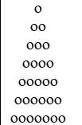
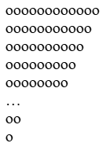
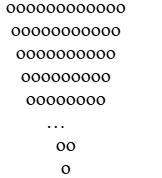

-
Task-0
0. Вивести на екран
A B C D E
B C D E F
C D E F G
D E F G H
E F G H I -
Task1
Використовуючи цикли вивести на екран 20 символів «о».
-
Task2
Відобразити трикутник за допомогою символів «о»

-
Task2.1
Відобразити трикутник за допомогою символів «о»
 -
Task3
Відобразити трикутник за допомогою символів «о»
 -
Task3.1
Відобразити трикутник за допомогою символів «о»
 -
Task4 (НА ПЕРЕВІРКУ)
У першокласника Миколи m грн. Морозиво коштує k грн. Микола вирішив наїстися досхочу морозива, для цього він до тих пір, поки йому вистачало грошей, купував по одному морозиву і з'їдав його. Як Миколі дізнатися, скільки грошей залишиться в нього врешті-решт? Врахуйте, що Микола ділити ще не вміє, а вміє тільки віднімати та додавати. Скільки морозив він може з'їсти?
-
Task5 (НА ПЕРЕВІРКУ)
У бригаді, що працює на сінокосі, є N сінокосарок. Перша сінокосарка працювала m годин, а кожна наступна на 10 хв більше, ніж попередня. Скільки годин працювала вся бригада?
-
Task8
Вивести на екран послідовність символів а о а о а о а о а о … Всього символів 82.
-
Task9
Вивести на екран
1 1
2 1 2
3 1 2 3
4 1 2 3 4
…
i 1 2 3 ..i
23 1 2 3 .. 22 23 -
Task11
Вивести на екран усі двоцифрові числа, у яких перша цифра є більшою або рівною за другу.
-
Task11.1
Вивести на екран усі трицифрові числа, у яких перша цифра є більшою або рівною за суму другої і третьої.
-
Task12
Введіть з клавіатури 10 пар чисел. Порівняйте числа у кожній парі та надрукуйте більше з них.
-
Task13
Дано натуральні числа від 20 до 50. Надрукувати ті з них, які діляться на 3, але не діляться на 5.
-
Task14
Дано натуральні числа від 35 до 87. Надрукувати ті з них, які при діленні на 7 дають остачу 1, 2 або 5..
-
Task15
З клавіатури вводяться числа та послідовно сумуються. Знайти кількість введених користувачем чисел, коли їх сума перевищить 100.
-
Task16
У комп’ютер вводяться по черзі дані про зріст N учнів класу. Визначити середній зріст учнів класу.